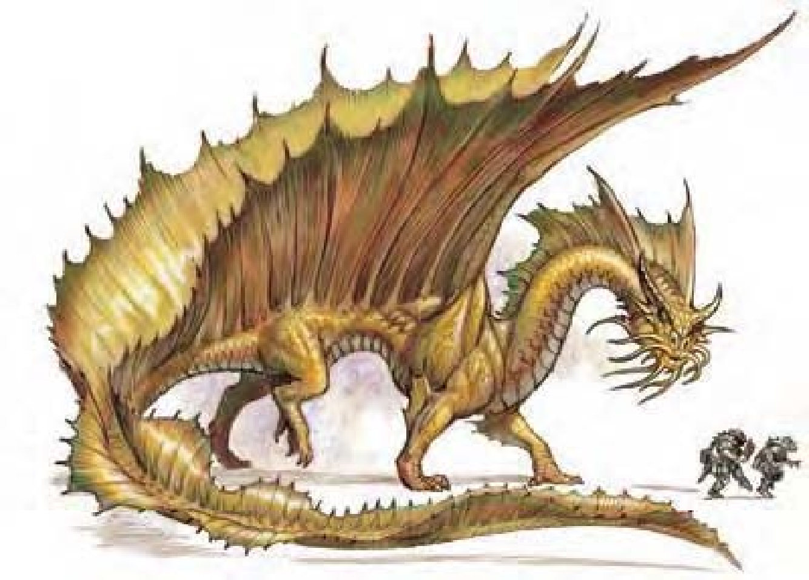

从鼻子和眉毛间长出一对斜向后方的大角，长脖子有两道皱褶，嘴边的胡须形似鲶鱼的触须。船帆似的翅膀从肩膀延伸到尾巴末端。金龙闻起来像是番红花和香料，鳞片金光闪闪。
金龙个性优雅、迂回、有智慧，痛恨不义和犯罪，经常自动自发地伸张正义，时常以人类或动物的形象出现。
刚孵化时鳞片呈现带有金色斑点的暗黄色，这些斑点会随着年龄增长而变大，成年龙的鳞片完全转为金黄色。金龙的长髯让他看起来颇有智慧。随着年龄瞳孔会慢慢变淡，最后像是一潭融化的黄金。
金龙可以居住在任何环境，巢穴相当隐秘，为石头建成的洞穴或城堡。通常有忠心的守卫；包括适合该地形的动物、风暴巨人或善良的云巨人。巨人和金龙通常会有互相保护对方的约定。
金龙以珍珠或小的宝石为生，只要不是用来贿赂他，金龙会很乐意收下这类礼物。
金龙的环境与社群环境：热暖带平原。
组织：雏龙、幼龙、少年龙、青少年龙和青年龙：单独或数尾 (2-5)；成年龙、壮年龙、老年龙、极老龙、古龙、上古龙或太古龙：单独、成双或一家 (1-2，加上2-5个后代)。
挑战级数：雏龙5、幼龙7、少年龙9、青少年龙11、青年龙14、成年龙16、壮年龙19、老年龙21、极老龙22、古龙24、上古龙25、太古龙27。
宝藏：三倍标准。
阵营：总是守序善良。
进化：雏龙9-10HD；幼龙12-13HD；少年龙15-16HD；青少年龙18-19HD；青年龙21-22HD；成年龙24-25HD；壮年龙27-28HD；老年龙30-31HD；极老龙33-34HD；古龙36-37HD；上古龙39-40HD；太古龙42+ HD。
等级修正值：雏龙+4；幼龙+5；少年龙+6；其余无。
| 资料栏位 | 成年金龙 (Adult Gold Dragon) 超大型龙 (火系) |
| 生命骰 | 23d12+115 (264HP) |
| 先攻 | +4 |
| 速度 | 60英尺 (12格)、游泳60英尺、飞行200英尺 (不良) |
| 防御等级 | 30 (-2体型、+22天生)、接触8、措手不及30 |
| 基本攻击/擒抱 | +23 / +42 |
| 攻击 | 啮咬+32近战 (2d8+11) |
| 全力攻击 | 啮咬+32近战 (2d8+11) 及 2爪抓+27近战 (2d6+5) 及 2翼击+27近战 (1d8+5) 及 尾巴拍击+27近战 (2d6+16) |
| 占据/触及 | 15英尺 / 10英尺 (啮咬时15英尺) |
| 特殊攻击 | 喷吐攻击、碾压、威势、类法术能力、法术 |
| 特殊能力 | 化形、伤害减免5 / 魔法、黑暗视觉120英尺、对火焰/“睡眠术”/麻痹免疫、昏暗视觉、“运气加值”、法术抗力23、易受寒冷伤害、水中呼吸 |
| 豁免 | 强韧+18、反射+13、意志+18 |
| 属性 | 力量33、敏捷10、体质21、智力20、感知21、魅力20 |
| 技能与专长 | 唬骗+13、专注+20、交涉+30、易容+28、躲藏-1、威吓+24、跳跃+46、神秘知识+20、地方知识+25、贵族与皇室知识+15、聆听+30、潜行+7、搜索+28、察言观色+27、法术辨识+28、侦察+30、游泳+19、生存+15 专长：警觉、空袭、精通先攻、领导力、谈判专家、猛力攻击、隐匿、翻转 |
| 环境/阵营/CR | 热暖带平原 / 总是守序善良 / 挑战级数：16 |
金龙在开战之前会先谈判。在与智慧生物交谈时，会用“威吓”和“察言观色”来取得优势。在战斗中会使用“祝福术”和“运气加值”，年龄较大的金龙在每天的一早就会使用“运气加值”。战斗时大量施展法术，最偏爱的法术包括：“死云术”、“延迟爆裂火球”、“火焰护盾”、“法术无效结界”、“迷宫术”、“睡眠术”、“缓慢术”、“臭云术”。
喷吐攻击 (超自然)：金龙有两种喷吐攻击，射出锥状火焰或是锥状虚弱化气体。在虚弱化气体锥状范围内的生物必须进行强韧检定，失败就遭受1点力量伤害，每一年龄层再加1点。
成年金龙：50英尺锥状，12d10点火焰伤害，通过反射检定 (DC=26，升阶则DC也升高) 则伤害减半；或50英尺锥状，6点力量伤害，通过强韧检定 (DC=26，升阶则DC也升高) 则无效。
化形 (超自然)：每天三次，金龙可以用标准动作化为任何中体型以下的动物或人形生物。金龙可持续保持变形形态，直到决定变回或更换形态为止。
水中呼吸 (特异)：金龙可以在水中呼吸，潜水时仍可使用喷吐攻击、法术及其他能力 (锥状火焰在水中变为锥状过热蒸汽)。
“运气加值” (类法术能力)：每天一次，成年龙或更老的龙可以触摸一颗通常被龙皮包覆的宝石，赋予法力来为自己带来好运。宝石的影响范围半径为10英尺，每年龄层再加10英尺。只要金龙随身携带这颗宝石，自己和影响范围内的善良生物每一次豁免检定或类似检定都获得+1运气加值，效果如同幸运石 (见《地下城主指南》第268页说明)。如果把赋予法力的宝石给别的生物，只有持有者获得此加值。效果可维持1d3小时，每年龄层再加3小时，宝石被摧毁就失效。此能力等同二级法术。
“侦测宝石” (类法术能力)：老年龙或更老的龙每天可以使用此能力三次。预言效果如同“侦测魔法”，但是只能寻找宝石。每轮可以扫描60度弧形范围；保持专注1轮可以得知此弧形内是否有宝石，保持专注2轮可以得知宝石的数目，3轮可以知道宝石的位置、种类和价值。此能力等同二级法术。
类法术能力：每天3次――“祝福术” (青少年龙或更老的龙)；每天1次――“指使术” (老年龙或更老的龙)、“阳炎爆” (古龙或更老的龙)、“预警术” (太古龙)。
技能：“易容”、“医疗”和“游泳”为金龙的本职技能。
成年金龙类法术能力：每天3次――“祝福术”。施法者等级7。
威势 (特异)：半径180英尺，对HD22以下生物有效，通过意志检定 (DC=26) 则无效。
碾压 (特异)：范围15英尺x15英尺；对小型以下的生物造成2d8+13点敲击伤害，对手若未通过反射检定 (DC=26) 则被压制；啮咬加值+38。
成年金龙法术：视同七级术士。一般已知术士法术 (6/8//7/7/5；豁免检定DC=15+法术等级)：
零级――“秘法印记”、“侦测魔法”、“闪光术”、“光亮术”、“法师帮手”、“魔法伎俩”、“阅读魔法”；
一级――“魅惑人类”、“魔法飞弹”、“防护邪恶”、“虔诚护盾”、“克敌先机”；
二级――“治疗中度伤”、“云雾术”、“抵抗元素伤害”；
三级――“灼热光辉”、“暗示”。
| 年龄层 | 体型 | 生命骰 (HP) | 力 | 敏 | 体 | 智 | 感 | 魅 | 基本攻击 / 擒抱 | 基本攻击 | 强韧 | 反射 | 意志 | 喷吐攻击 (DC) | 威势DC |
|---|---|---|---|---|---|---|---|---|---|---|---|---|---|---|---|
| 雏龙 | 中 | 8d12+16 (68) | 17 | 10 | 15 | 14 | 15 | 14 | +8 / +11 | +11 | +8 | +6 | +8 | 2d10 (16) | ― |
| 幼龙 | 大 | 11d12+33 (104) | 21 | 10 | 17 | 16 | 17 | 16 | +11 / +20 | +15 | +10 | +7 | +10 | 4d10 (18) | ― |
| 少年龙 | 大 | 14d12+42 (133) | 25 | 10 | 17 | 16 | 17 | 16 | +14 / +25 | +20 | +12 | +9 | +12 | 6d10 (20) | ― |
| 青少年龙 | 大 | 17d12+68 (178) | 29 | 10 | 19 | 18 | 19 | 18 | +17 / +30 | +25 | +14 | +10 | +14 | 8d10 (22) | ― |
| 青年龙 | 超大 | 20d12+100 (230) | 31 | 10 | 21 | 18 | 19 | 18 | +20 / +38 | +28 | +17 | +12 | +16 | 10d10 (25) | 24 |
| 成年龙 | 超大 | 23d12+115 (264) | 33 | 10 | 21 | 20 | 21 | 20 | +23 / +42 | +32 | +18 | +13 | +18 | 12d10 (26) | 26 |
| 壮年龙 | 超大 | 26d12+156 (325) | 35 | 10 | 23 | 20 | 21 | 20 | +26 / +46 | +36 | +21 | +15 | +20 | 14d10 (29) | 28 |
| 老年龙 | 巨 | 29d12+203 (391) | 39 | 10 | 25 | 24 | 25 | 24 | +29 / +55 | +39 | +23 | +16 | +23 | 16d10 (31) | 31 |
| 极老龙 | 巨 | 32d12+256 (464) | 41 | 10 | 27 | 26 | 27 | 26 | +32 / +59 | +43 | +26 | +18 | +26 | 18d10 (34) | 34 |
| 古龙 | 巨 | 35d12+315 (542) | 43 | 10 | 29 | 28 | 29 | 28 | +35 / +63 | +47 | +28 | +19 | +28 | 20d10 (36) | 36 |
| 上古龙 | 超巨 | 38d12+380 (627) | 45 | 10 | 31 | 30 | 31 | 30 | +38 / +71 | +47 | +31 | +21 | +31 | 22d10 (39) | 39 |
| 太古龙 | 超巨 | 41d12+451 (717) | 47 | 10 | 33 | 32 | 33 | 32 | +41 / +75 | +51 | +33 | +22 | +33 | 24d10 (41) | 41 |
| 年龄层 | 速度 | 先攻权 | 防御等级 | 特殊能力 | 施法者等级 | SR |
|---|---|---|---|---|---|---|
| 雏龙 | 60英尺、飞行200英尺 (不良)、游泳60英尺 | +0 | 17 (+7天生)、接触10、措手不及17 | 化形、对火焰免疫、易受寒冷伤害、水中呼吸 | ― | ― |
| 幼龙 | 60英尺、飞行200英尺 (不良)、游泳60英尺 | +0 | 19 (-1体型、+10天生)、接触9、措手不及19 | 化形、对火焰免疫、易受寒冷伤害、水中呼吸 | ― | ― |
| 少年龙 | 60英尺、飞行200英尺 (不良)、游泳60英尺 | +0 | 22 (-1体型、+13天生)、接触9、措手不及22 | 化形、对火焰免疫、易受寒冷伤害、水中呼吸 | 1级 | ― |
| 青少年龙 | 60英尺、飞行200英尺 (不良)、游泳60英尺 | +0 | 25 (-1体型、+16天生)、接触9、措手不及25 | 祝福术 | 3级 | ― |
| 青年龙 | 60英尺、飞行200英尺 (不良)、游泳60英尺 | +0 | 27 (-2体型、+19天生)、接触8、措手不及27 | 伤害减免5 / 魔法 | 5级 | 21 |
| 成年龙 | 60英尺、飞行200英尺 (不良)、游泳60英尺 | +0 | 30 (-2体型、+22天生)、接触8、措手不及30 | “运气加值” | 7级 | 23 |
| 壮年龙 | 60英尺、飞行200英尺 (不良)、游泳60英尺 | +0 | 33 (-2体型、+25天生)、接触8、措手不及33 | 伤害减免10 / 魔法 | 9级 | 25 |
| 老年龙 | 60英尺、飞行250英尺 (笨拙)、游泳60英尺 | +0 | 34 (-4体型、+28天生)、接触6、措手不及34 | “指使术 / 侦测宝石” | 11级 | 27 |
| 极老龙 | 60英尺、飞行250英尺 (笨拙)、游泳60英尺 | +0 | 37 (-4体型、+31天生)、接触6、措手不及37 | 伤害减免15 / 魔法 | 13级 | 28 |
| 古龙 | 60英尺、飞行250英尺 (笨拙)、游泳60英尺 | +0 | 40 (-4体型、+34天生)、接触6、措手不及40 | “阳炎爆” | 15级 | 30 |
| 上古龙 | 60英尺、飞行250英尺 (笨拙)、游泳60英尺 | +0 | 39 (-8体型、+37天生)、接触2、措手不及39 | 伤害减免20 / 魔法 | 17级 | 31 |
| 太古龙 | 60英尺、飞行250英尺 (笨拙)、游泳60英尺 | +0 | 42 (-8体型、+40天生)、接触2、措手不及42 | “预警术” | 19级 | 33 |
* 亦可施展牧师法术及混乱、邪恶与火领域的法术，均视为秘法术。